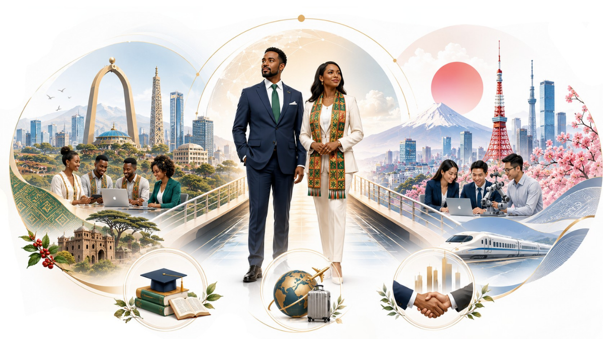

About EthioMirai
エチオ未来について
A Japan–Ethiopia bridge organization — connecting the two countries through Education, Cultural Exchange, and Business Partnerships.
教育・文化交流・ビジネスパートナーシップを通じて日本とエチオピアをつなぐブリッジ組織です。
What EthioMirai Is
エチオ未来とは
EthioMirai (エチオ未来) is a Japan–Ethiopia bridge organization dedicated to creating opportunities and connections between the two countries. Our mission: connecting Japan and Ethiopia through Education, Cultural Exchange, and Business Partnerships.
エチオ未来（EthioMirai）は、日本とエチオピアの間に機会とつながりを生み出すことを目的としたブリッジ組織です。ミッションは、教育・文化交流・ビジネスパートナーシップを通じて日本とエチオピアをつなぐことです。
The name "Mirai" (未来) means "future" in Japanese — a reflection of what we build: lasting opportunities and relationships between the two nations.
名前の「未来」は、私たちが築くもの——両国の間の永続的な機会と関係——をそのまま表しています。
We are not a travel agency, a language school, or a consulting firm alone. We are a bridge organization that operates through three core pillars: Education & Opportunity, Cultural Exchange & Travel Support, and Business & Partnership Support.
私たちは旅行会社でも、語学学校でも、単なるコンサルティング会社でもありません。教育と機会、文化交流と渡航サポート、ビジネスと提携支援という3つの柱で活動する「架け橋」の組織です。
EthioMirai is built on years of firsthand experience living, studying, working, and building networks in both Japan and Ethiopia. Operating in Japanese, Amharic, and English, we serve as a trusted bridge for individuals, communities, and organizations on both sides.
エチオ未来は、日本とエチオピアの両国で暮らし、学び、働き、ネットワークを築いてきた長年の実体験の上に成り立っています。日本語・アムハラ語・英語で活動し、両国の個人・コミュニティ・組織にとって信頼できる架け橋となります。

Two Leaders. Two Countries. One Bridge.
二人のリーダー、二つの国、ひとつの架け橋。
EthioMirai is led from both sides of the bridge — with leadership based in Japan and dedicated leadership for Ethiopia relations.
エチオ未来は、日本を拠点とするリーダーと、エチオピア関係を専任で担うリーダーの二人体制で運営されています。
Noah Eskindir — Professional Headshot
Noah is an Ethiopian professional based in Japan. He completed a Japanese Language and University Preparation Program in Japan, holds JLPT N2 certification, and graduated from Waseda Bunri College with a specialization in Embedded Software Engineering. He works as a Software Engineer at Castalia Co., Ltd.
ノアは日本を拠点とするエチオピア出身のプロフェッショナルです。日本で日本語・大学進学準備プログラムを修了し、JLPT N2を取得。早稲田文理専門学校で組込みソフトウェア工学を専攻し、現在はカスタリア株式会社でソフトウェアエンジニアとして働いています。
Through his professional work, Noah has supported international education and capacity-building projects involving organizations such as JICA, AOTS, UNESCO/IICBA, and educational institutions. He works in Japanese, English, and Amharic, with a strong understanding of Japanese business culture and Ethiopian environments.
業務を通じて、JICA、AOTS、ユネスコ/IICBA、教育機関などが関わる国際教育・人材育成プロジェクトを支援してきました。日本語・英語・アムハラ語で働き、日本のビジネス文化とエチオピアの環境の双方を深く理解しています。
Noah is the founder of Maya Nihongo, EthioMirai’s Japanese Language & Student Support Program, and is active as a social media educator and content creator for the Ethiopia–Japan community.
エチオ未来の日本語・留学生支援プログラム「マヤ日本語」の創設者でもあり、エチオピアと日本のコミュニティに向けたSNS教育・コンテンツ発信にも取り組んでいます。
Tegegn Begashaw Abate — Professional Headshot
Tegegn holds a Bachelor of Arts in Tourism Management and brings deep experience in tour planning, event organization, customer support, and cross-cultural communication. His background spans travel coordination, translation support, life consultation for newcomers, business development, and partnership building.
テゲンは観光マネジメントの学士号を持ち、ツアープランニング、イベント運営、カスタマーサポート、異文化コミュニケーションの豊富な経験を有しています。渡航コーディネート、翻訳サポート、新生活相談、ビジネス開発、パートナーシップ構築まで幅広い実績があります。
His professional vision: to serve as a bridge between Japan and Ethiopia through cultural understanding, tourism support, business cooperation, and people-to-people connections.
「文化理解、観光サポート、ビジネス協力、人と人とのつながりを通じて日本とエチオピアの架け橋となる」——それが彼のビジョンです。
At EthioMirai, Tegegn leads the Cultural Exchange & Travel Support pillar and anchors the organization’s presence and relationships on the Ethiopian side.
エチオ未来では「文化交流と渡航サポート」の柱を担当し、エチオピア側における組織の活動と関係構築を統括しています。
What Makes EthioMirai Different
エチオ未来の強み
Many organizations talk about connecting countries. EthioMirai is built on lived experience in both.
国と国をつなぐと語る組織は数多くありますが、エチオ未来は両国での実体験の上に築かれています。
Leadership on Both Sides両国にリーダーシップ
A Japan Director based in Tokyo and an Ethiopia Relations Director anchoring our work on the Ethiopian side — so both ends of the bridge are held by someone who lives there.
日本側には東京を拠点とするディレクター、エチオピア側には現地の活動を支えるディレクター。架け橋の両端を、そこに暮らす人間がしっかり支えています。
Real Cross-Cultural Experience本物の異文化経験
Our work is grounded in real experience living and working in both cultures — not theory, but years of navigating Japanese organizations and Ethiopian communities directly.
私たちの仕事は、両方の文化で暮らし働いてきた実体験に根ざしています。理論ではなく、日本の組織とエチオピアのコミュニティを直接歩んできた年月そのものです。
Multilingual by Nature3言語での対応力
We operate in Japanese, Amharic, and English, allowing partners on either side to communicate in the language most comfortable for them.
日本語・アムハラ語・英語で活動しているため、どちらの国のパートナーも、最も使いやすい言語でコミュニケーションできます。
Personal Networks in Both Countries両国の人的ネットワーク
We maintain personal, trusted networks in both Japan and Ethiopia — the relationships that turn introductions into partnerships and ideas into outcomes.
日本とエチオピアの両方に、信頼に基づく個人的なネットワークを持っています。紹介をパートナーシップに、アイデアを成果に変えるのは、こうした関係です。